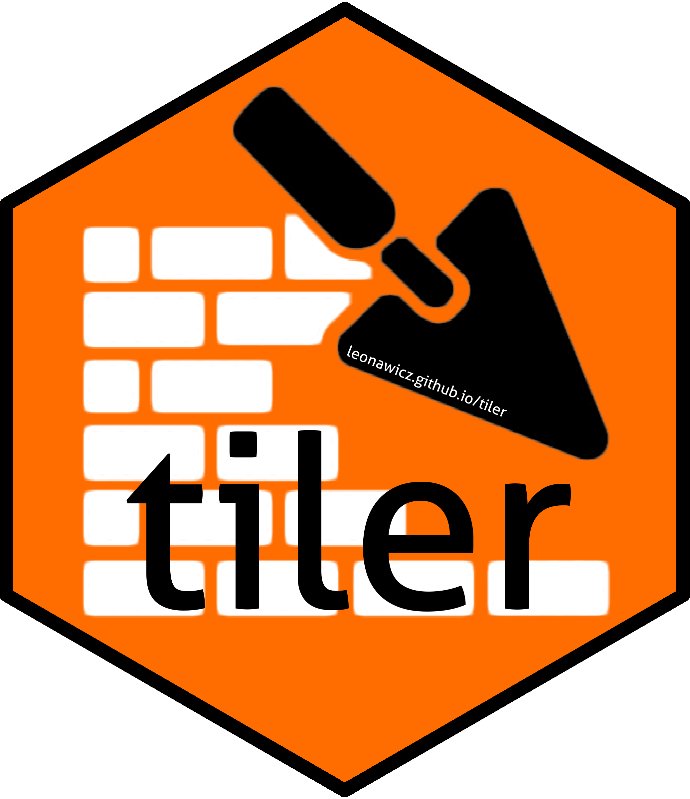
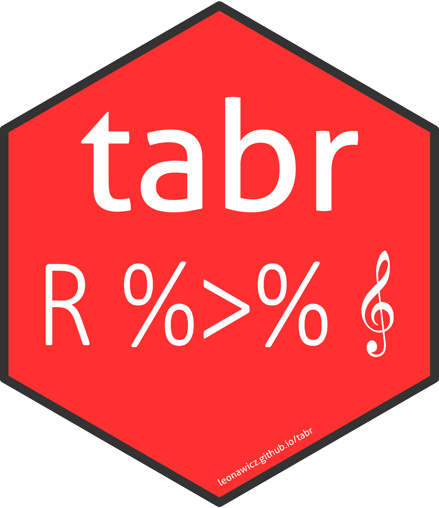

This past year in R has been a good one for me; productive, exciting, different. I decided it was worth taking a moment to reflect and share. Goals were set and met. There were also unexpected changes.
CRAN
A year ago, at the tail end of 2017, I published my first package to CRAN. It’s a fun, silly package, but I also had to make a successful case for in the initial review process to distinguish it from other similar works. It was a great experience and it encouraged me to try to do even more.
So anyway, I got to check that box last year. I resolved to do more this year.
I wanted to publish to CRAN again. I did so five more times throughout the year.
ROpenSci
I ended up inadvertently (more on this later) publishing two packages to CRAN which struck me as having particular scientific/analytics appeal and for the first time I looked into cross-publishing with ROpenSci. I set a goal to publish something with ROpenSci.

With the first one, epubr, I read through the various ROpenSci onboarding docs, looked over others’ packages, and concluded that, “maybe my package is a good fit?” I was somewhat anxious to try, afraid that maybe my package would be too niche or that others might not see much value in it. Maybe as the author I was the only who saw it as a potential fit. Maybe I had a biased perspective because of the hard work I had put into it.
I submitted my onboarding issue and made a case for my package. To my relief, and also chuckling a bit at myself because part of me knew that my moments of self-doubts were silly and overblown, people did see value in it. I knew it would be a more rigorous peer review process than CRAN and that was part of the experience I sought. I jumped through all the hoops, made the revisions that others suggested, and also held firm to a thing or two that I did not particularly want to change about the package. After some time went by and everyone was happy with the state I’d gotten the package to, it was published! Another goal met.

More recently this year I submitted a second of the year’s CRAN packages to ROpenSci: tiler. For years my work in R has been in the geospatial realm, whereas I do not have nearly as much experience in parsing and analyzing text. Nevertheless, I expected to have more difficulty getting tiler published than epubr, but I managed to do it. I ended up meeting my goal twice. There is still much I want to do to improve tiler and I’ve been a bit stuck for a while with certain GitHub issues, but it is on board and I’m thankful for the help I’ve received on GitHub from others who are unquestionably more expert in the geospatial arena than I am.
I met some great people working with ROpenSci in my small capacity. I look forward to more collaborations.
A digression on doing what you are passionate about
I’ve wanted to do something in R around Star Trek for a long time, so publishing the initial version to CRAN was a successful goal in itself. But it goes beyond that.
Returning to the inadvertent nature of the creation of epubr and tiler, both published on CRAN and with ROpenSci, these are both packages that simply would not exist if I did not first decide to make rtrek. Like memery, packages like rtrek (and trekfont) are clearly packages that no one really needs or particularly wants. But rtrek is the single reason epubr and tiler were originally created, even though their utility and potential user base far transcends what began as custom text-parsing and map-making R functions I was using to support working with Star Trek data.
Having new ideas
New ideas can be hard to come by, unless the environment is right.
Sometimes it is hard to come up with an idea directly that (1) has value in being implemented, (2) that is not too difficult to implement yourself, and (3) that someone else hasn’t implemented already. It’s like the adage about “fast, cheap, accurate”- you can pick any two.
While trying to think up a novel idea, it can be worth ruminating on that while pursuing something else, something of genuine personal interest that perhaps no one else cares about at all. I found that I became really excited to work on rtrek. It was easy for me to envision fun features I could add to the package.
Having new needs
Necessity can lead to new ideas. If you can identify needs, ideas may come more easily. They cycle may only require a jump start.
After working on rtrek for a bit, I inadvertently created a need, admittedly around something unimportant to a broad audience, something not for work, certainly nothing I was getting paid to code. I had ideas I could not implement until I satisfied some needs by implementing some other things first.
I needed the ability to read text from Star Trek EPUB files so that I could dabble in text analysis and satiate some of my curiosities. And the code to do so was a bit of a mess. It soon began to look like something that ought to be excised from the primordial rtrek codebase and put into its own utility package.
I needed the ability to make leaflet maps of Star Trek map art, which technically is spatial but not geospatial. That code too became bulky and needed to be cut out and put in its own package.
The next thing I knew, I was staring at two different packages that were general, purposeful, and had the potential to be useful to a lot of other people, but which never would have occurred to me to produce otherwise. They were just… there. Those were exciting moments all on their own. What began as mere intermediary hurdles transformed into their own projects with greater utility.
As exciting as it has been to work on rtrek I am most happy to see that its biggest value so far has been in leading to completely new and different things.
Changing jobs
I don’t have a lot to say on this here, but I love where I ended up and I was surprised how quickly I landed something much more personally and professionally fulfilling. I do miss aspects of academia in general. I definitely miss not getting to work on geospatial material as much as before. But overall it’s been a great change.
R and music
Early this year I put my mind to trying to make guitar tablature (tabs) with R. Why? What the heck is the point? Well, it’s pretty simple:
- I love to play guitar.
- I absolutely loathe that mistake-riddled, incomplete, garbage guitar tabs are a contender for the title of “the bane of the internet” (IMO). Few things irritate me more than digging around for a quality tab, only to find that even a crappy one can be locked behind a licensing paywall and sold for a ridiculous price anyway. (But this is a whole other conversation about the recording industry, intellectual property, and more…)
- I also am not very good at writing out my own tabs, on paper or in a software GUI (purportedly) designed for it. While I’ve gotten better over time at just learning songs by ear, I still find it helpful to have a tab. It’s like having code documentation when you return to something after a long time away.
- Since I’m slow enough at making tabs and I do love R, I inhabit a funny space where I find it no less of a pain to just write them in R.

This led to the creation of tabr, which is interestingly one of my least used yet most widely celebrated creations: an R package for writing guitar tabs/sheet music. It’s not perfect, but I’m proud of it. For me it’s fresh, different.
I’ve also found to my surprise (and somewhat my annoyance) that several packages I have made ended up having third party system requirements. Gah! This is NOT ideal. But whether it was Python/GDAL, LilyPond, or ImageMagick, it’s been a good experience to deal with some complex package-making.
tabr was one of those that took this system requirements inconvenience a step further. I mean, who would have thought that CRAN machines did not have LilyPond installed! LOL. But when I published tabr to CRAN as a new release, I was surprised to see how quickly LilyPond was put on a machine so the package could be built and tested there. The CRAN maintainers really do go all out for you if you do your part as a package maintainer. I know they are very busy people. What they do is much appreciated.
I met Gin Wigmore!!!!
Yes that was a goal, in retrospect at least. I’m choosing to count it. No, I did not think it would happen. I wasn’t trying; I had no plan. But like I said, it’s been a grand year. And a theme of this post seems to be about if opportunities come up, even if you created them by accident or indirectly, or they came out of nowhere or you couldn’t have planned it in advance, JUST ROLL WITH IT. #2018. It also helped that she did a show near where I live.
Wait, “what does this have to do with R,” you ask? EVERYTHING.
First of all, like the R programming language, she too hails from New Zealand. I tell people I program in R 40 hours a week. How many hours a week am I cranking Gin Wigmore’s music to eleven? Well, it’s probably on par. R and Gin Wigmore. End. Of. Discussion. But I will continue. Two of my favorites in life. To be clear, I’ve never been, so I don’t know what’s going on down there, but to pull this off, New Zealand must truly be a magical place.
Wanting to tab out some of her songs for guitar was also a central motivation for tabr. Most musician’s don’t release sheet music, if they ever even write down their own songs in the first place. Many don’t at all. In this case, I have to make my own tabs because I can’t buy them, and if anything is even floating around online it’s junk. The first song I tabbed out with tabr was Gin Wigmore’s “Devil in Me”.
I would share it online but that’s not appropriate without permission. This is just a preview of the top of the first page. (For the critics, I must mention that the backend software R is relying on is currently imperfect at notating string bends.)
Here is a GitHub gist of R code. Be forewarned, it’s not exactly pretty. There is no magical shortcut to transcribing music.
After the show she took time out to chat with her fans. But when I say chat, I mean have real conversations. It wasn’t like “Hi!” Snap photo. Exit. Repeat. Let’s hurry it up. No. It was genuine, not rushed at all. I and many others got to actually have conversations with her.

And yet, I was so damn excited to meet her that I completely neglected to tell her I play guitar too and that her songs were what most inspired me to transcribe music as well as improve my ability to learn to play by ear.